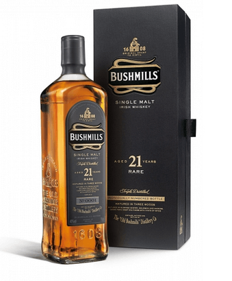

Bushmills
Описание товара
Bushmills знаменит, прежде всего, тем, что производится на самой старой винокурне в мире. Впрочем, это не мешает ему заодно оставаться и одним из наиболее качественных крепких алкогольных напитков Ирландии.
Характеристики
| Характеристики | |
| Величина | Значение |
| Содержимое | В аромате прослеживается присутствие медовых оттенков. Пристальное внимание производителем напитка уделено дубовым бочкам для выдержки виски. |
| Цена | от 70$ |
Подробное описание товара
История
Ставшая легендарной винокурня появилась более четырехсот лет назад, недалеко от деревеньки Бушмиллс, которая и дала ей имя. Интересно, что за это время производство виски в ней не прекращалось ни на день, несмотря на мировые войны, сухой закон и введение эмбарго на поставки алкоголя из Ирландии на мировой рынок. Интересно, что владелец производства, Уолтер Тейлор получил лицензию из рук самого Короля Якова I. Ежегодно винокурню Bushmills посещают не менее ста тысяч туристов.
Особенности вкуса и аромата
Ключевое отличие ирландского виски Бушмилс от шотландского скотча заключается в исключительной мягкости первого. Это достигается с помощью тройной дистилляции, а также благодаря отсутствию в технологическом процессе стадии сушки сусла над торфяным огнем.
Другие товары
JamesonTullamore Dew